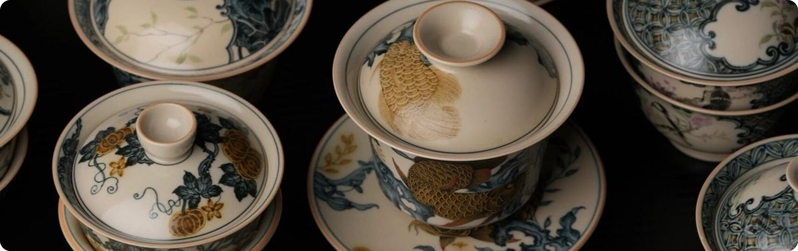
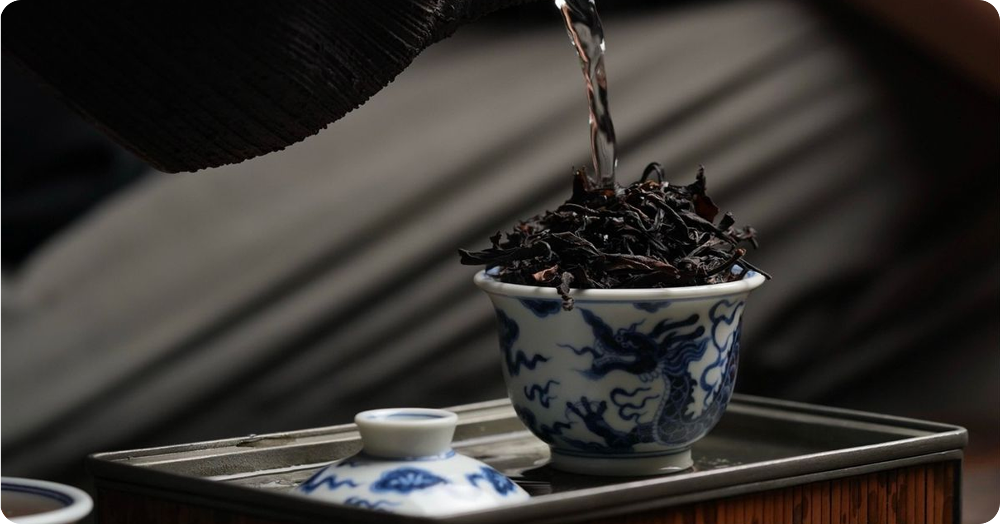

Почему Кудин пьют во время простуды и как избежать горечи при заваривании напитка?
20 ноября 2025

Эксперт в китайском чае

Ни ручки, ни носика, ни хотя бы какого‑то фильтра. Гайвань — небольшая круглая пиала с крышечкой, которую уже пять сотен лет используют для заваривания китайского чая. По форме она похожа на пузатый перевёрнутый колокол, а по назначению полностью заменяет заварочный чайник.
Четыре причины выбрать гайвань, а не чайник

Ни ручки, ни носика, ни хотя бы какого‑то фильтра. Гайвань — небольшая круглая пиала с крышечкой, которую уже пять сотен лет используют для заваривания китайского чая. По форме она похожа на пузатый перевёрнутый колокол, а по назначению полностью заменяет заварочный чайник.
«Гайвань можно использовать двумя способами. В первом случае она выступает исключительно как инструмент для заваривания, затем чай переливается в чашки. Это фуцзяньский подход. Во втором — одновременно служит и заварником, и сосудом, из которого пьют готовый настой. Это сычуаньский метод».
Как правильно пользоваться гайванью
Метод жителей Сычуани пользуется спросом по большей части в самом Китае, а фуцзяньский вариант известен везде, где любят китайский чай. Выбирая второй способ, важно заранее разобраться, как правильно держать гайвань при разливе чая.
Некоторые мастера чайной церемонии умеют наливать чай не через передний край гайвани (со стороны кончиков пальцев), а через дальний (со стороны ладони).
Наполняя гайвань, важно следить за тем, чтобы горячая вода не доходила до самого верха, иначе края сосуда перегреются и будут обжигать пальцы. Контролировать стоит и положение пальцев: им не следует быть в тех местах, где из гайвани вытекает чай или вырывается пар
Как исторически появилась гайвань
Исторически гайвань, а если точнее — обычная чайная пиала, была первым инструментом для заваривания чая после котла, в котором на протяжении многих веков в Китае варили колотый прессованный чай. Когда в период династии Мин китайцы перешли на листовой, им потребовался новый, более подходящий для рассыпного чая инструмент. Поначалу китайцы просто заливали чайные листья горячей водой в пиале, а затем из неё же и пили. Но в XV–XVI веке у пиалы появилась крышка, которая заметно упростила процесс чаепития. Она помогает регулировать процесс настаивания, ускоряя его (крышка снята) или замедляя (пиала накрыта крышкой). Когда чай уже заварен, чуть сдвинутая крышечка выполняет роль фильтра.
А потом добавилось и блюдечко, чтобы потёки воды или чая не попадали на стол.